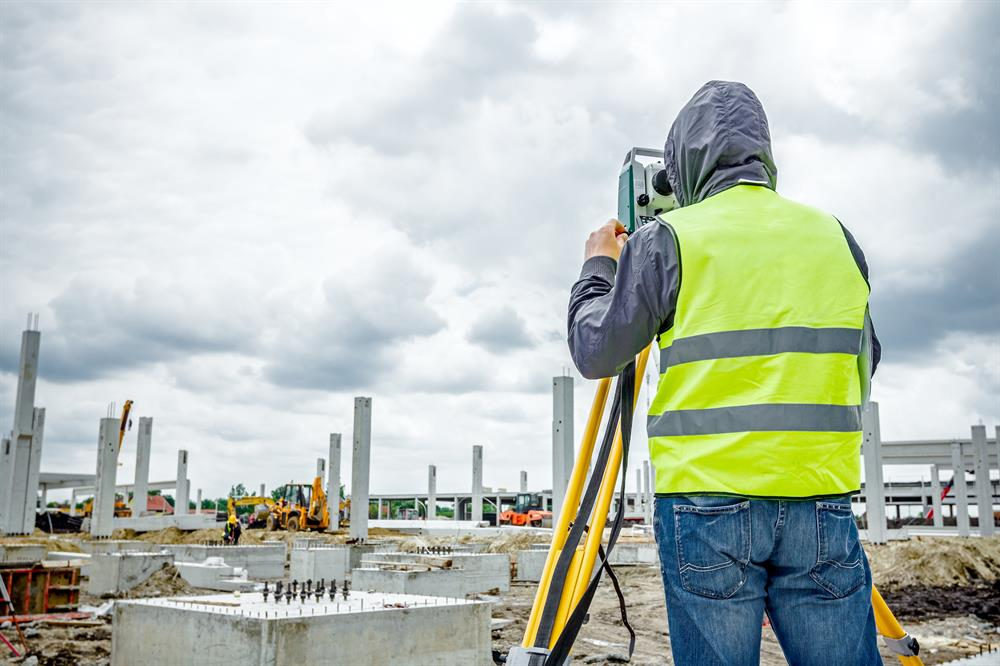
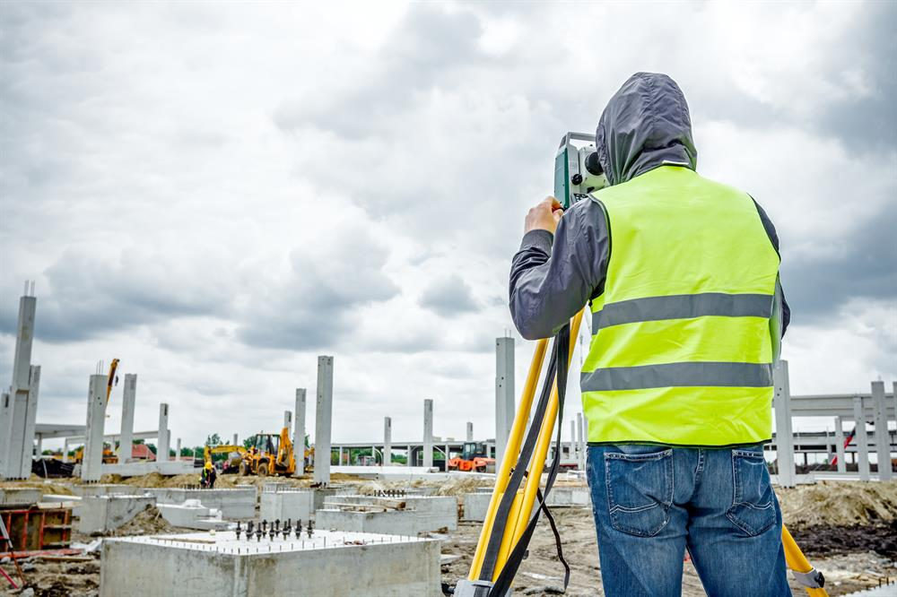
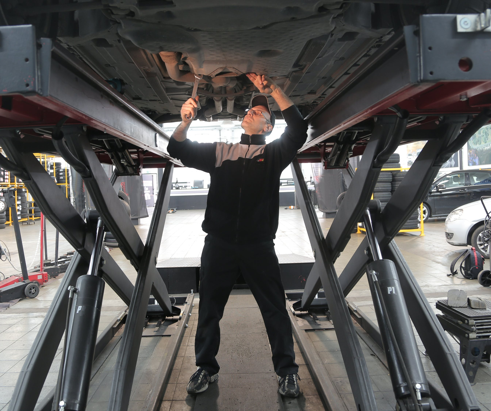
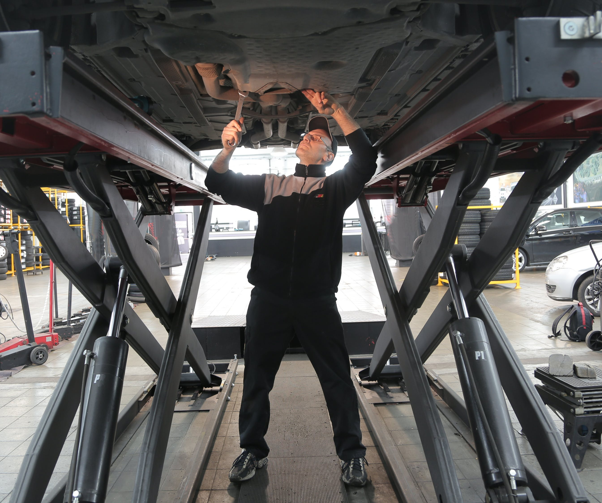

Top Recruiters
Know more about placements
 

Civil Engineering (CE) was first offered as a Diploma course and later, as a Bachelor’s degree post affiliation to the University of Mysore in 1950. The first batch graduated in 1955. Over the last two decades, the department which is part of one of the best engineering colleges in India, has received support from various agencies including the Ministry of Human Resource Development (MHRD), All India Council for Technical Education (AICTE) and University Grants Commission (UGC), under their funding schemes resulting in regular modernisation of the laboratories.
The department prides itself for developing some of the brightest minds — Prof N V C Swamy – Director, IIT Chennai, M L Nagaraja – Chief of New York Metro Transport Services, and C N Nagaraj became the Chief Pontiff of Adi-Chunchanagiri Mahasamsthana, one of Karnataka’s largest seats of ‘dharma’.
Recently, the department notched up its facilities via World Bank-aided Technical Education Quality Improvement Programme (TEQIP) to install state-of-the-art equipment and software in 13 laboratories. The Field Hydrological Laboratory has been set up in a remote area of the Western Ghats for field research and mountain hydrology.
Watch a video by a faculty member to know more about a career as a Civil Engineer, subjects to be studied, practical training, laboratory testing methods, specializations for better employability, technological advancements in the industry and more.
The department also has high placement statistics with 90% of the students getting placed in various leading companies such as ATKINS, L&T, Brigade Group, TCS Ltd. etc.
Know more about placements
The Department of Computer Science and Engineering (CSE) was set up in 1983 with B.E. programme. Ever since the department has grown exponentially on all fronts such as infrastructure, courses and faculty.
The department has Nine computer centres with around 300 computers equipped with the latest hardware, software and peripherals. The recently established state-of-the-art IBM OpenPower lab which delivers unparalleled performance for analytics, Artificial Intelligence (AI), and modern High-Performance Computer (HiPC). The department hosts campus-wide networking facility with 10 servers (including high-end ones), Internet laboratory housing 60 computers with a dedicated leased line connectivity of 550 Mbps (wired and wireless) and a well-stocked library.
Our impactful curriculum and outstanding faculty have enabled students to be placed in foremost companies such as Cisco, HP, Intuit, Microsoft R&D, Walmart, Deloitte, Dell, Morgan Stanley and several others. This academic year the highest package was INR 46.5 Lakhs/ annum.
As the department is among the first two of its kind in Karnataka to be recognized as a Doctoral-level Research Centre by Visveswaraya Technological University (VTU). Qualified professors serve as research guides under whom 20 candidates have been awarded Ph.D and 20 research scholars are pursuing Ph.D. The current faculty strength is 28 which includes 6 Professors, 4 Associate Professors, 18 Assistant Professors, faculty for English, Constitution and Professional Ethics and Kannada to help non-native students.
To nurture bright minds into entrepreneurship and innovation the department is chosen as an incubation centre by Karnataka Biotechnology and Information Technology Services. The department is also the recipient of a World Bank grant under Technical Education Quality Improvement Programme (TEQIP) and utilizes the funds to enhance department facilities and for faculty development.
Know more about placements
The Department of Electrical & Electronics Engineering established in the year 1958 with Bachelor’s degree in “Electrical & Electronics Engineering”, is one of the first few departments at The National Institute of Engineering, Mysuru. The department made a humble beginning in 1958 with only four staff members and two laboratories housed in an area of about 900 sq. mts. In the silver jubilee year of the institute in 1971, a postgraduate programme leading to master’s degree in “Power Systems” was started. In the year 1987, the department was recognized as research centre to carry out Ph.D programme. Further in the golden jubilee year of the institute in 1996, another postgraduate programme titled “Computer Applications in Industrial Drives” was started.
In the year 2002, the department established a centre of excellence “Centre for Energy Management and Test Systems for Electrical Apparatus” (CEMATEA), authorized by electrical inspectorate, Government of Karnataka to carryout periodical testing of various electrical installations in industries and other organizations in and around Mysuru.
In the year 2007, the institute was awarded autonomous status for all the undergraduate and postgraduate programmes by Visvesvaraya Technological University, Belagavi, Karnataka. The department has been a continuous beneficiary of financial assistance over the years by NIE management, state and central governments. In the year 2005, under Technical Education Quality Improvement Programme-I (TEQIP-I), the department received a funding of about 0.8 Crores to upgrade the facilities of under graduate programme. Further under TEQIP-II and TEQIP-III in the years, 2012 and 2017 respectively, the department received financial assistance of 1.0 Crore and 0.6 Crores. The department over the years has established fourteen laboratories with state-of-the-art facility worth over 5 Crores. Under TEQIP-III the department has also been identified as a mentor for the department of Electrical Engineering of Rajakiya Engineering College, Banda, Uttar Pradesh.
Till now more than 3000 graduates, 700 post graduates, and 25 Ph.D.’s have acquired degrees from the department. The department has produced world renowned academicians, technocrats, entrepreneurs and sportsmen. Padma Vibhushana Sri. N.R. Narayana Murthy, an iconic figure is a proud alumnus of the department. Other legendary alumni include Padmashree Sri. EAS Prasanna, Ace off spinner, Sri. Kumara Malavalli, Founder & CEO of Brocade communications, USA, Dr. Y.V. Venkatesh, former Professor, IISc Bengaluru. The bright stars include Dr. P.S. Nagendra Rao, Professor IISc Bengaluru, Dr. R. Nagaraja, MD, PRDC Bengaluru, Sri. Jay Puller, Founder and CEO, Pramathi Technologies, Sri. J.P. Nagaraj, Former Head, L&T Mysuru, Sri Siva Gopal Valluri, Former Scientist, ISRO, Dr.K. Balaraman, Director General, National Institute of Wind Energy Chennai.
The department is honoured to have Sri. N.R. Narayana Murthy and Sri. Siva Gopal Valluri, proud alumni as Directors on the Board of Management of the Institute. With the blessings of the founders and financial assistance from NIE management, the departments of Electrical and Electronics Engineering and Electronics and Communications Engineering are now housed in NRN School of Electrical Sciences, which was inaugurated in the month of March 2016.
The department has a vision to become internationally recognized center of excellence imparting quality education in electrical engineering for the benefit of academia, industry and society at large.
Know more about placements
Since its inception in 1971, the Department of Electronics and Communication Engineering (ECE) at NIE has been at the forefront pioneering research and education in its field. The department is a trailblazer in the Internet of Things (IoT), being the first to offer an academic course on the subject strongly supported by a full-fledged laboratory set up with generous contributions from its alumni.
While equipping students with a strong foundation in the basics of Electronics, Computers, Communication Engineering and Instrumentation, the department also incorporates the latest technology developments such as the Internet of Things (IoT), Network Security, Neural Networks, Artificial Intelligence, and Machine Learning in industry-relevant courses. Collaborations with leading industry players to design and deliver the curriculum, strong presence in the research field, a well-informed and published faculty, innovations encompassing integrated laboratories, use of open source tools and industry-driven projects, and internship opportunities are pathways that this NBA-accredited department creates to help you realise the future you dream of.
Know more about placements
Know more about placements
Know more about placements
 

Know more about placements
Know more about placements
Know more about placements

know more about placements